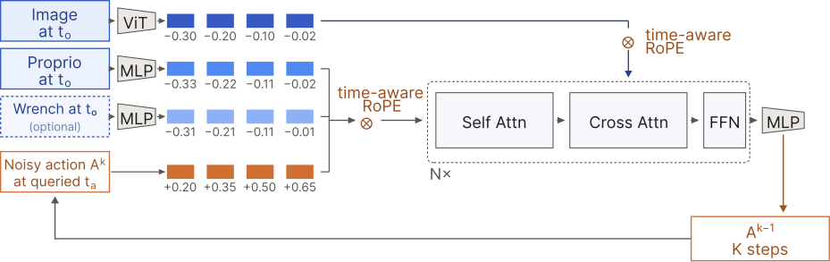
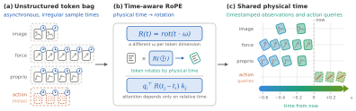

Chronos Policy: Learning Robot Policies on Physical Time
“Chronos” is the Greek word for time, reflecting that the policy reasons directly over physical time.
Sensors update at different rates, data can arrive late, and computing a robot’s next move takes time. Policies trained on fixed timing can become unreliable when those rates and delays change.
Why timing matters
The same displacement between two images can imply different velocities if they were captured 20 ms or 200 ms apart. Grasping a moving object also depends on when the action will execute. Fixed sequence positions leave these time intervals implicit.
Adjust rates and delays to explore the timing of observations and actions. Each change draws a new example, keeping two input observations per sensor. The policy query is at 0 ms.
Blue arrows: latest observation → query. Orange arrow: query → first action.
Make time part of the policy
To resolve this ambiguity, Chronos Policy takes observation capture times and requested action execution times as inputs, alongside the observations.
- Observations
- Capture times
- Requested execution times
The timestamps specify observation spacing, measurement age, and the desired action schedule. The same observation history can then be used to query actions at different future times.
Method
Transformer architecture
We implement this formulation with a diffusion transformer. A vision transformer encodes images into patch tokens; proprioception and optional force/torque measurements become sensor tokens. Conditioned on these observations, the transformer denoises an action chunk at the requested execution times.
Click a token, timestamp, or block to see what it represents.

Time-aware RoPE
Physical time enters the transformer through attention. Time-aware RoPE uses capture and execution timestamps as temporal coordinates, so attention reflects elapsed time between tokens while their content embeddings stay unchanged.
Click a token, clock, or equation to see how it works.

Training with temporal randomization
During training, we vary each sensor’s observation rate and delivery delay, as well as when the action chunk begins. Keeping the corresponding timestamps makes these variations interpretable, helping the policy learn from different sensing and execution schedules.
Real-world experiments
Selected trials are shown. Scores use all trials.
Task score
Full success + ½ partial credit.
Lighter bars indicate partial credit.
Trial counts and setup
Score = 100 × (full + ½ partial) / trials. Dynamic Cup and Peg Insertion use 10 trials per cell; Pivoting uses 20. Total: 480 trials. The broken-gripper trial in Pivoting RTC Combined is counted as zero.
All methods use asynchronous execution. Controller smoothing follows the manuscript’s configurations. Clips show separate runs; internal pauses, retries, and outcomes are retained.
Additional trials
Simulation
Conveyor, Pivoting, and six bimanual manipulation tasks.
Matched scenes with timing changes
About these rollouts
Every method uses the same 50 scene seeds, in the same grid positions. Green marks a reached success condition; red marks a rollout that finishes without success. Completed clips hold their final frame.
Benchmark results
Mean ± sample SD across 3 training seeds. Conveyor and Pivoting: 450 episodes per method and condition; other tasks: 150.
All timing settings
Ablations
Temporal randomization and time representations.
Mean ± sample SD across 3 training-seed means; 450 episodes per method and condition.